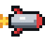
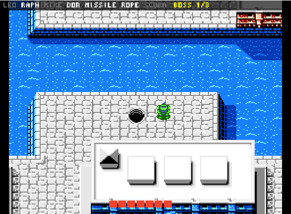
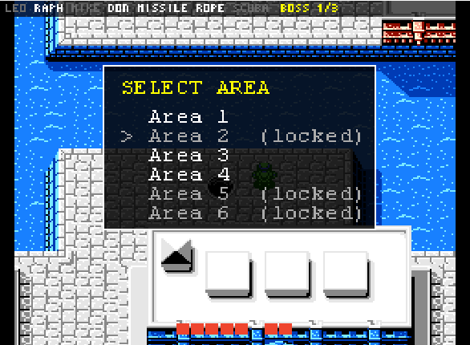

Play
Generate a seed, start everything with one command, then play Hyrule and New York until both Ganon and Shredder are beaten.
Generate a seed
The player files are in players\: alttp.yaml (slot Link) and tmnt.yaml
(slot Turtles).
cd C:\Project\tmntalttp\Archipelago
..\.venv\Scripts\python.exe Generate.py --player_files_path ..\players --outputpath ..\output\marathonThe result is output\marathon\AP_<seed>.zip. It holds the server file, both patch files and
the spoiler log (with the playthrough). Keep the spoiler with the production team, off screen.
| Option | Default here | What it does |
|---|---|---|
start_turtle | raphael | The turtle you start with (or random). |
start_area | area_1 | The Area pass you start with; its tools come with it. |
start_hints | Leonardo, Michelangelo, Donatello, Missile Pack, Rope Pack | Hinted from the first minute, so the way to go mode is readable. |
progression_balancing | 75 (both slots) | Pulls progression between the games earlier, so the runner waits less. |
non_local_items | all turtles, passes and tools; Hookshot, Flippers, Moon Pearl | These always land in the other game, which weaves the two together. |
| ALttP | mode: open, goal: ganon, vanilla entrances | Standard Archipelago A Link to the Past. |
18a0630 (2026-10-31) lack the
unlimited-continues patch, so the third game over ends the run. Generate a new one.Start a session
cd C:\Project\tmntalttp
powershell -ExecutionPolicy Bypass -File tools\start_stream.ps1 -Seed output\marathon\AP_<seed>.zipThe script patches the ROMs if needed and then starts, in order:
- MultiServer on
localhost:38281, in its own console window (host commands go there). - SNI.
- BizHawk with ALttP and SNI's Lua connector (window "alttp-stream [SNES] - BizHawk").
- BizHawk with TMNT and
lua\tmnt_stream.luases: Archipelago's connector plus the area menu (window "tmnt-stream [NES] - BizHawk"). - SNI Client and BizHawk Client, already connected.
- Two PopTracker windows: ALttP (slot Link) and TMNT (slot Turtles).
It stops if port 38281 is already in use. Parameters: -Port, -AlttpSlot,
-TmntSlot, -EmuHawk, -PopTracker, -NoTracker.
The TMNT side
Items (12 locations, 12 items)
| Item | What it does |
|---|---|
  Turtles Turtles |
A turtle you do not own is captured and cannot be picked. Received mid-Area, it is freed at once. |
 Sewer Pass: Area 1–5 Sewer Pass: Area 1–5 | Opens that Area in the area menu. |
 Missile Pack | 15 missiles for the Party Wagon (Area 3); refills whenever you hit 0. |
 Rope Pack Rope Pack | 5 ropes for the rooftop gaps (Areas 3 and 4); refills whenever you hit 0. |
 Zora's Scuba Kit Zora's Scuba Kit | Needed for the underwater dam in Area 2. |
 Whole Pizza Whole Pizza | Filler. |
What each Area needs
| Area | To enter | Locations |
|---|---|---|
| 1 | Sewer Pass 1 | Sewer Entrance, Boss |
| 2 | Sewer Pass 2 + Zora's Scuba Kit | Sewer Entrance, Boss |
| 3 | Sewer Pass 3 + Missile Pack + Rope Pack | Sewer Entrance, Boss |
| 4 | Sewer Pass 4 + Rope Pack | Sewer Entrance, Boss |
| 5 | Sewer Pass 5 (the boss needs Donatello) | Sewer Entrance, Boss |
| 6 Technodrome | all four turtles + 3 of the 5 Area bosses beaten | Shredder (goal) |
Plus two free gifts in the Turtle Lair (Splinter's Gift, April's Van), sent as soon as the client connects. A sewer entrance counts when its Area loads; a boss counts when you beat it.
Area menu and HUD


| Buttons | Does |
|---|---|
| Select + Up | Open the area menu (game input is held while it is open) |
| Up / Down, A | Pick an Area and load it |
| B or Select + Down | Close the menu (not when it was forced open) |
| Select + Left | Hide or show the status bar |
Received items show in BizHawk's message area: "Got Rope Pack from Link", "Found Leonardo".
What happens when…
| …you | Then |
|---|---|
| beat an Area boss | The game moves on to the next Area. If its pass is missing, the menu opens and stays open until you load an unlocked Area. |
| lose every turtle | Game over, then CONTINUE. Continues are unlimited (the ROM is patched); the Area restarts and your owned turtles are free again. |
| run out of missiles or ropes | With the pack you are refilled at once. Vanilla pickups still exist as bonus ammo. |
| rescue a captured turtle in the game | If you do not own her, the client captures her again. |
| start a new game from the title screen | The menu opens; pick an Area. |
| beat a boss while the client is disconnected | It is remembered in RAM and sent when the client comes back. |
| see "Connect the AP client" in the menu | The BizHawk Client is not connected yet. |
The ALttP side
Standard Archipelago A Link to the Past through SNI: open mode, goal Ganon, vanilla entrances. Its chests hold turtles, passes and packs; TMNT's bosses and entrances hold its items (Hookshot, Flippers and Moon Pearl always do). Crystals are shuffled between dungeons as usual; the runner sees them on the map.
Host commands
Type these in the MultiServer console window:
| Command | Use |
|---|---|
/hint Turtles Donatello | Reveal where an item is, e.g. as a donation incentive. |
/send Turtles Rope Pack | Emergency: give an item. |
/send_location Turtles Area 2 - Boss | Emergency: count a location as checked. |